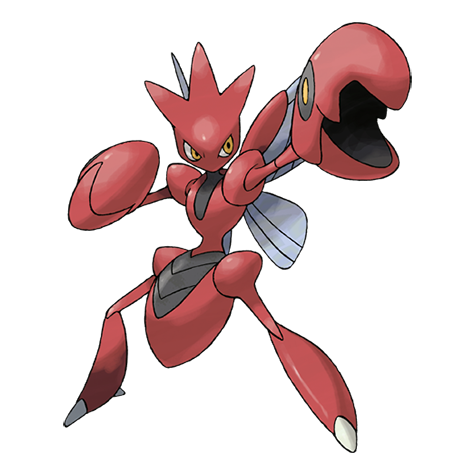
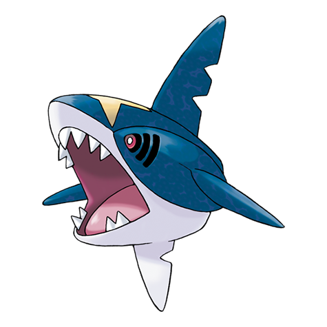
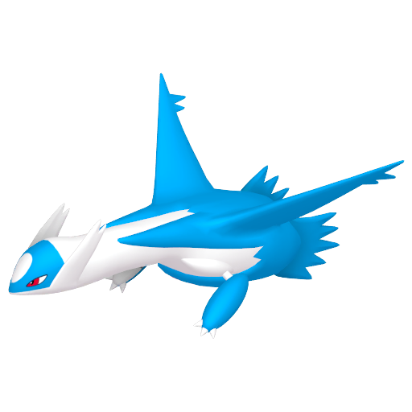

Venusaur

Venusaur é a forma final de evolução de Bulbasaur, um dos três Pokémon iniciais da região de Kanto.
Ele é caracterizado por seu corpo corpulento e folhagem densa em suas costas.
Sua aparência é marcada por tons de verde, com manchas vermelhas nas flores em suas costas.
Suas folhas são grandes e formam uma espécie de floresta nas costas de Venusaur.
Mega Venusaur

Mega Venusaur é a forma mega evoluída de Venusaur, obtida através da Mega Stone específica chamada
"Venusaurite" durante a batalha.
Esta forma de Mega Evolução é caracterizada por um aumento notável em tamanho e poder.
Suas folhas nas costas se expandem e tornam-se ainda mais exuberantes, exibindo uma mistura de verde intenso
e folhas de cores mais vibrantes.
As flores em suas costas também crescem e se tornam mais proeminentes.
Charizard

Charizard é um Pokémon de tamanho grande. Sua pele é predominantemente laranja com asas azuis, uma cauda
longa com uma chama na ponta e uma barriga creme.
Ele tem olhos azuis brilhantes e afiados dentes brancos. Charizard é a forma final de evolução de
Charmander, um dos Pokémon iniciais da região de Kanto. Tendo duas megas evoluções
Mega Charizard X

Mega Charizard X é a forma de mega evolução de Charizard, obtida através da Mega Stone específica chamada
"Charizardite X" durante a batalha.
Esta forma de Mega Evolução é caracterizada por uma mudança significativa em sua aparência, adotando uma
coloração predominantemente preta e azul,
com detalhes em azul brilhante. Suas asas se expandem, tornando-se maiores e mais musculosas, e chifres
afiados crescem em sua cabeça e cauda.
Mega Charizard Y

Mega Charizard Y é a forma de mega evolução de Charizard, obtida através da Mega Stone específica chamada
"Charizardite Y" durante a batalha. Esta forma de Mega Evolução é caracterizada por uma mudança
significativa em sua aparência, que se torna mais elegante e majestosa. Suas asas se expandem e se tornam
mais vistosas, com uma coloração em tons de laranja e amarelo. Sua cauda também se torna mais longa e
espiralada, com uma chama maior e mais brilhante na ponta.
Blastoise

Blastoise é um Pokémon grande e robusto, conhecido por sua aparência de tartaruga com uma carapaça resistente
em suas costas.
Sua pele é predominantemente azul, com detalhes em marrom em sua concha e membros. Sua carapaça é
extremamente resistente,
e ele pode recuar sua cabeça e membros dentro dela para se proteger de ataques. Seus canhões de água,
localizados em suas costas,
são sua característica mais marcante. Blastoise é frequentemente retratado com um olhar sério e determinado.
Mega Blastoise

Mega Blastoise é a forma de mega evolução de Blastoise, alcançada através do uso da Mega Stone específica
chamada "Blastoisinite" durante a batalha. Esta forma de Mega Evolução é marcada por um aumento
significativo em seu poder e uma mudança visual marcante. A principal característica de Mega Blastoise é a
gigantesca e poderosa barragem de água que se forma em sua carapaça. Seu canhão de água se transforma em um
verdadeiro canhão de alta pressão, capaz de disparar jatos d'água com incríveis forças,precisão e quentes.
Beedrill

Beedrill é um Pokémon do tipo Inseto e Venenoso. Ele é a forma final de evolução de Weedle, que evolui para
Kakuna e, finalmente, para Beedrill. Beedrill tem um corpo esguio, com listras amarelas e pretas distintas
ao longo de sua parte superior. Suas asas são transparentes com veias escuras e três ganchos venenosos em
cada uma. As antenas de Beedrill são longas e finas, e seus olhos vermelhos e compostos dão a ele uma
aparência intimidante. Capaz de atacar com rapidez e precisão. Além disso, suas agulhas venenosas são
extremamente perigosas, capaz de localizar presas usando suas antenas sensíveis e atacá-las com seu ferrão
venenoso.
Mega Beedril

Mega Beedrill é a forma mega evoluída de Beedrill, obtida através do uso da Mega Stone específica chamada
"Beedrillite" durante a batalha. Esta forma de Mega Evolução é marcada por mudanças significativas em sua
aparência e aumento de poder. Mega Beedrill apresenta uma estrutura corporal mais estilizada e agressiva.
Suas agulhas venenosas são ainda maiores e mais afiadas, e seus ferrões possuem um brilho ainda mais
ameaçador. As asas de Mega Beedrill também são mais alongadas, permitindo-lhe voar com maior velocidade e
agilidade.
Pidgeot

Pidgeot é a forma final de evolução de Pidgey, um dos Pokémon iniciais da região de Kanto. Ele é
caracterizado por sua aparência majestosa, com penas abundantes e um porte elegante. Sua plumagem é
predominantemente marrom, com detalhes em branco e uma crista característica no topo de sua cabeça. Suas
asas são largas e poderosas, permitindo-lhe voar com grande destreza e velocidade. Os olhos de Pidgeot são
afiados e expressivos, refletindo sua inteligência e agilidade.
Mega Pidgeot

Mega Pidgeot é a forma mega evoluída de Pidgeot, obtida através do uso da Mega Stone específica chamada
"Pidgeotite" durante a batalha. Esta forma de Mega Evolução é marcada por mudanças significativas em sua
aparência e aumento de poder. Mega Pidgeot apresenta uma envergadura de asas ainda maior do que a de sua
forma original, com penas brancas e alongadas que fluem elegantemente ao vento. Sua crista vermelha no topo
da cabeça se torna mais proeminente, e seus olhos brilham com uma determinação intensa.
Alakazam

Alakazam é uma das evoluções finais do Abra, que evolui para Kadabra e, finalmente, para Alakazam. Ele se
destaca por sua aparência esbelta e seu olhar penetrante. Alakazam possui um corpo humanoide, com braços e
pernas magros e uma longa barba branca que se estende do queixo até o peito. Ele carrega duas colheres, que
utiliza para focar e amplificar seus poderes psíquicos. Seus olhos são profundamente hipnóticos, refletindo
sua incrível capacidade mental.
Mega Alakazam

Mega Alakazam é a forma mega evoluída de Alakazam, obtida através do uso da Mega Stone específica chamada
"Alakazite" durante a batalha. Esta forma de Mega Evolução é marcada por mudanças significativas em sua
aparência e aumento de poder. Mega Alakazam mantém a forma humanoide de Alakazam, mas com algumas alterações
notáveis. Seus braços tornam-se mais longos e finos, e suas colheres psíquicas se tornam ainda maiores e
mais resplandecentes. Ele emite uma aura psíquica intensa, refletindo seu poder aprimorado.
Slowbro

Slowbro é uma criatura peculiar e única. Ele é a evolução de Slowpoke quando uma Shellder se prende à sua
cauda. Sua aparência é uma combinação estranha entre Slowpoke e Shellder. Slowbro é caracterizado por seu
corpo grande e robusto, com uma concha gigante e uma cauda poderosa. A cabeça de Slowpoke permanece visível,
enquanto Shellder se funde à sua cauda. Slowbro tem uma expressão tranquila e descontraída, refletindo sua
natureza serena e despreocupada.
Mega Slowbro

Mega Slowbro é a forma mega evoluída de Slowbro, obtida através do uso da Mega Stone específica chamada
"Slowbronite" durante a batalha. Esta forma de Mega Evolução é marcada por mudanças significativas em sua
aparência e aumento de poder. Mega Slowbro apresenta uma fusão ainda mais profunda entre Slowbro e Shellder.
A concha de Shellder agora envolve lentamente o corpo inteiro de Slowbro, formando uma espécie de armadura
defensiva. Shellder está completamente imerso na concha, com apenas seus olhos visíveis. Slowbro permanece
em sua posição relaxada, enquanto a concha gigante o protege.
Gengar

Gengar é um dos Pokémon mais icônicos da série, conhecido por sua aparência sinistra e sua natureza travessa.
Ele é a forma final de evolução de Gastly, que evolui para Haunter e, finalmente, para Gengar. Gengar tem
uma aparência sombria e maliciosa, com uma pele roxa e um grande sorriso sinistro. Ele flutua no ar, sem pés
visíveis, o que adiciona à sua aura fantasmagórica. Seus olhos são vermelhos e penetrantes, transmitindo uma
sensação de mistério e malícia.
Mega Gengar

Mega Gengar é a forma mega evoluída de Gengar, obtida através do uso da Mega Stone específica chamada
"Gengarite" durante a batalha. Esta forma de Mega Evolução é marcada por mudanças significativas em sua
aparência e aumento de poder. Mega Gengar tem uma aparência ainda mais sinistra e ameaçadora do que Gengar.
Seu corpo se estica e distorce, adquirindo uma forma mais esbelta e afiada. Seus olhos vermelhos brilham com
uma intensidade ainda maior, transmitindo uma aura de malícia e poder.
Kangaskhan

Kangaskhan é um Pokémon mamífero bastante imponente e robusto. Ele se destaca por sua aparência maternal, com
um grande bolsa em seu abdômen que abriga seu filhote, conhecido como Cubone. Kangaskhan tem uma pelagem
marrom com manchas creme, e seus olhos expressam uma mistura de força e gentileza. Suas presas afiadas e
garras poderosas são indicativos de sua natureza protetora, pronta para defender seu filhote de qualquer
ameaça.
Mega Kangaskhan

Mega Kangaskhan é a forma mega evoluída de Kangaskhan, obtida através do uso da Mega Stone específica chamada
"Kangaskhanite" durante a batalha. Esta forma de Mega Evolução é marcada por mudanças significativas em sua
aparência e aumento de poder. Mega Kangaskhan apresenta uma mudança notável em sua aparência, com seu
filhote
saindo da bolsa em seu abdômen. O que reflete seu aumento de poder e proteção.
Pinsir

Pinsir é um Pokémon com aparência de besouro gigante, conhecido por sua robustez e força física. Ele tem um
corpo musculoso e compacto, com chifres afiados em sua cabeça e uma mandíbula poderosa. Pinsir tem uma
carapaça resistente que o protege durante batalhas e atividades de escavação. Suas garras são afiadas e
poderosas, permitindo-lhe agarrar e levantar objetos pesados. Sua aparência intimidante é acentuada por seus
olhos vermelhos e expressão feroz.
Mega Pinsir

Mega Pinsir é a forma mega evoluída de Pinsir, obtida através do uso da Mega Stone específica chamada
"Pinsirite" durante a batalha. Esta forma de Mega Evolução é marcada por mudanças significativas em sua
aparência e aumento de poder. Mega Pinsir assume uma forma ainda mais imponente e ameaçadora do que Pinsir.
Seus chifres crescem em tamanho e afiação, sua carapaça se torna mais robusta e suas asas se expandem,
permitindo-lhe voar.
Gyarados

Gyarados é conhecido como um dos Pokémon mais intimidadores e poderosos da região de Kanto. Ele é a forma
evoluída de Magikarp, um Pokémon inicialmente considerado fraco e inútil. Gyarados é uma criatura aquática
imponente, com um corpo longo e serpenteante coberto por escamas azuis brilhantes. Ele tem uma cabeça larga
com olhos vermelhos penetrantes e uma boca cheia de dentes afiados. Suas barbatanas peitorais são poderosas
o suficiente para criar correntes na água e suas barbatanas dorsais são proeminentes, adicionando à sua
aparência imponente.
Mega Gyarados

Mega Gyarados é a forma mega evoluída de Gyarados, obtida através do uso da Mega Stone específica chamada
"Gyaradosite" durante a batalha. Esta forma de Mega Evolução é marcada por mudanças significativas em sua
aparência e aumento de poder. Mega Gyarados tem um corpo ainda mais imponente e intimidador do que Gyarados.
Sua coloração azul-escura é acentuada por faixas vermelhas em seu corpo, e suas barbatanas dorsais e cauda
são ainda maiores e mais proeminentes. Suas presas afiadas e olhos vermelhos transmitem uma aura de fúria e
poder.
Aerodactyl

Aerodactyl é uma criatura pré-histórica com características semelhantes às dos pterossauros. Ele tem um corpo
musculoso e esguio, com asas enormes que lhe permitem voar em alta velocidade. Sua pele é coberta por
escamas duras e afiadas, dando-lhe uma aparência formidável. Aerodactyl tem uma cabeça grande com uma
mandíbula cheia de dentes afiados e olhos vermelhos penetrantes. Suas garras afiadas permitem-lhe agarrar
suas presas com facilidade.
Mega Aerodactyl

Mega Aerodactyl é a forma mega evoluída de Aerodactyl, obtida através do uso da Mega Stone específica chamada
"Aerodactylite" durante a batalha. Esta forma de Mega Evolução é marcada por mudanças significativas em sua
aparência e aumento de poder. Mega Aerodactyl tem um corpo mais esguio e aerodinâmico do que Aerodactyl, com
asas maiores e uma cauda mais longa. Suas mandíbulas são ainda mais pronunciadas, e suas garras são mais
afiadas do que nunca.
Mewtwo

Mewtwo é um Pokémon do tipo Psíquico, o que lhe confere uma ampla gama de habilidades mentais. Ele é
conhecido por sua inteligência superior e sua capacidade de controlar e manipular objetos com sua mente.
Mewtwo também é capaz de ler mentes e prever os movimentos de seus oponentes em batalha. Suas habilidades
psíquicas são tão poderosas que ele é capaz de desencadear ataques devastadores, como o Psychic e o Shadow
Ball, capazes de derrotar até mesmo os oponentes mais poderosos.
Mega mewtwo X

Mega Mewtwo X é a forma de mega evolução de Mewtwo, que ocorre quando ele segura a Mewtwonite X durante a
batalha. Sua aparência após a mega evolução é marcada por mudanças significativas em sua forma e atributos.
Mega Mewtwo X assume uma postura mais bipedal e musculosa, com músculos volumosos e uma aura imponente. Seu
esquema de cores predominante é azul escuro, com detalhes em preto e branco. Suas mãos e pés se transformam
em garras afiadas, e suas costas são adornadas com uma protuberância que se assemelha a uma espécie de
armadura.
Mega Mewtwo Y

Mega Mewtwo Y é a forma de mega evolução de Mewtwo, que ocorre quando ele segura a Mewtwonite Y durante a
batalha. Sua aparência após a mega evolução é marcada por mudanças significativas em sua forma e atributos.
Mega Mewtwo Y mantém uma postura semelhante à de sua forma original, mas seu corpo é envolvido por uma aura
psíquica intensa, e seu esquema de cores predominantemente roxo fica mais vibrante. Sua cauda se alonga e
suas mãos adquirem uma aparência mais estilizada, com dedos alongados.
Ampharos

Ampharos é um Pokémon que se assemelha a uma ovelha, com um corpo amarelo coberto por uma pele lanosa e
macia. Ele tem uma cabeça grande e redonda com olhos amigáveis e orelhas compridas que se assemelham a
antenas. Seu corpo é adornado com faixas azuis que se estendem desde o topo de sua cabeça até a ponta de sua
cauda. Ampharos tem uma cauda longa e bifurcada, que brilha intensamente quando ele libera eletricidade.
Mega Ampharos

Mega Ampharos é a forma mega evoluída de Ampharos, obtida através do uso da Mega Stone específica chamada
"Ampharosite" durante a batalha. Sua aparência após a mega evolução é marcada por mudanças significativas em
sua forma e atributos. Mega Ampharos mantém sua pelagem lanosa, mas ela se torna mais longa e esvoaçante,
envolvendo seu corpo como uma capa majestosa. Seus chifres crescem em tamanho e se curvam para trás, e sua
cauda se estende em comprimento, transformando-se em uma espiral semelhante a uma lã de ovelha.
Steelix

Steelix é uma forma evoluída de Onix, alcançada através da troca de Onix segurando um Metal Coat. Ele mantém
a mesma estrutura de serpentina de seu antecessor, mas seu corpo é inteiramente constituído de um metal
rochoso, o que lhe confere uma aparência ainda mais intimidante e imponente. Sua pele de aço é cinza-escura,
com uma textura áspera e resistente. Suas presas são afiadas e seus olhos brilham com uma intensidade
impressionante.
Mega Steelix

Mega Steelix é a forma mega evoluída de Steelix, obtida através do uso da Mega Stone específica chamada
"Steelixite" durante a batalha. Sua aparência após a mega evolução é marcada por mudanças significativas em
sua forma e atributos. Mega Steelix mantém a estrutura serpentina de seu antecessor, mas seu corpo de aço é
amplificado em tamanho e resistência. Seu corpo agora é adornado com cristais de aço afiados e pontiagudos,
que brilham com uma intensidade impressionante.
Scizor

Scizor é a forma evoluída de Scyther, que ocorre quando Scyther é negociado enquanto segura um Metal Coat.
Ele mantém a mesma silhueta corporal aerodinâmica de Scyther, mas sua cor vermelha é substituída por um tom
de vermelho mais escuro e sua estrutura corporal é reforçada com metal. Seu corpo é robusto e musculoso, com
garras afiadas e uma aparência geral que lembra a de um guerreiro mecânico. A armadura de aço cobre seu
corpo, proporcionando-lhe uma defesa extra.
Mega Scizor

Mega Scizor é a forma mega evoluída de Scizor, obtida através do uso da Mega Stone específica chamada
"Scizorite" durante a batalha. Sua aparência após a mega evolução é marcada por mudanças significativas em
sua forma e atributos. Mega Scizor mantém a estrutura corporal robusta e musculosa de Scizor, mas sua
armadura de aço é ampliada e reforçada, cobrindo uma maior parte de seu corpo. Suas garras afiadas são ainda
mais poderosas, e sua aparência geral é mais imponente.
Heracross

Heracross é um Pokémon robusto e musculoso, com um corpo semelhante ao de um besouro rinoceronte. Sua
coloração predominante é azul escura, com detalhes em preto e amarelo em seu exoesqueleto. Ele tem uma
cabeça grande com olhos pequenos e antenas curtas. Seus braços são musculosos e terminam em garras
poderosas, que são usadas tanto para atacar quanto para segurar objetos. Heracross possui uma característica
distintiva: o grande chifre em sua cabeça, que ele usa para enfrentar seus adversários em batalha.
Mega Heracross

Mega Heracross é a forma mega evoluída de Heracross, obtida através do uso da Mega Stone específica chamada
"Heracronite" durante a batalha. Sua aparência após a mega evolução é marcada por mudanças significativas em
sua forma e atributos. Mega Heracross mantém a estrutura robusta e musculosa de Heracross, mas seu corpo é
ampliado e sua armadura exoesquelética se torna mais resistente e proeminente. Seu chifre também cresce em
tamanho, tornando-se uma arma ainda mais formidável.
Houndoom

Houndoom é um Pokémon canino com uma aparência intimidadora. Seu corpo é coberto por uma pelagem negra e seu
rosto possui traços que lembram uma caveira, com olhos vermelhos penetrantes e presas afiadas. Ele tem
chifres pontiagudos que se projetam de sua cabeça e uma crista flamejante em suas costas, que arde com um
fogo sinistro. Sua silhueta é ágil e elegante, refletindo sua agilidade em batalha.
Mega Houndoom

Mega Houndoom é a forma mega evoluída de Houndoom, obtida através do uso da Mega Stone específica chamada
"Houndoominite" durante a batalha. Sua aparência após a mega evolução é marcada por mudanças significativas
em sua forma e atributos. Mega Houndoom mantém a essência sinistra de Houndoom, mas sua aparência se torna
ainda mais ameaçadora. Seu corpo é envolvido por chamas negras e sua crista flamejante se expande, exalando
uma aura de escuridão e poder.
Tyranitar

Tyranitar é uma criatura colossal que lembra um tiranossauro rex misturado com uma fortaleza de rocha. Seu
corpo é coberto por uma armadura de pele escamosa escura e rochosa, com músculos proeminentes evidenciando
sua força formidável. Ele tem uma grande cabeça com olhos vermelhos intensos, e uma fileira de afiados
dentes pontiagudos. Suas costas são adornadas com espinhos afiados, e sua cauda termina em uma ponta
robusta.
Mega Tyranitar

Mega Tyranitar é a forma mega evoluída de Tyranitar, obtida através do uso da Mega Stone específica chamada
"Tyranitarite" durante a batalha. Sua aparência após a mega evolução é marcada por mudanças drásticas em sua
forma e atributos. Mega Tyranitar se torna ainda mais imponente, com sua armadura de rocha negra crescendo
em tamanho e cobrindo uma maior parte de seu corpo. Sua musculatura se torna mais robusta, e seus olhos
brilham com uma intensidade feroz.
Sceptile

Sceptile é um Pokémon semelhante a um lagarto, com uma aparência elegante e ágil. Seu corpo é
predominantemente verde, com folhas espinhosas que crescem em sua cauda e ao redor de seu pescoço. Ele
possui olhos amarelos intensos e uma expressão confiante. Sua estrutura corporal é esguia e aerodinâmica,
refletindo sua velocidade e agilidade em batalha. Sceptile também tem garras afiadas em suas mãos e pés, que
ele usa habilmente para se locomover rapidamente e atacar seus oponentes.
Mega Sceptile

Mega Sceptile é a forma mega evoluída de Sceptile, obtida através do uso da Mega Stone específica chamada
"Sceptilite" durante a batalha. Sua aparência após a mega evolução é marcada por mudanças significativas em
sua forma e atributos. Mega Sceptile mantém a estrutura esguia e ágil de Sceptile, mas agora suas folhas nas
costas se alongam e se tornam mais desenvolvidas, parecendo asas de dragão. Seu corpo também é revestido por
escamas verdes, e sua cauda fica mais longa e espinhosa.
Blaziken

Blaziken é uma criatura imponente com uma aparência que combina características de um galo e um lutador de
artes marciais. Seu corpo é musculoso e coberto por penas vermelhas, e ele possui pernas longas e poderosas
que lhe dão uma postura ereta e confiante. Blaziken tem um peito largo e uma crista de penas em forma de
chama que se estende desde sua cabeça até sua cauda. Seus punhos são envolvidos em chamas, prontos para
desferir golpes poderosos em seus oponentes.
Mega Blaziken

Mega Blaziken é a forma mega evoluída de Blaziken, obtida através do uso da Mega Stone específica chamada
"Blazikenite" durante a batalha. Sua aparência após a mega evolução é marcada por mudanças dramáticas em sua
forma e atributos. Mega Blaziken mantém a estrutura muscular e a postura ereta de Blaziken, mas suas chamas
ardentes se intensificam, envolvendo todo o seu corpo em um fogo furioso. Suas penas tornam-se mais longas e
afiadas, dando-lhe uma aparência ainda mais intimidadora.
Swampert

Swampert é uma criatura grande e musculosa com uma aparência que combina características de anfíbio e réptil.
Seu corpo é predominantemente azul, com uma pele áspera e escamosa que o protege do ambiente aquático. Ele
tem membros poderosos com garras afiadas e uma cauda robusta que ele usa para se movimentar rapidamente na
água e na terra. Swampert possui uma crista em sua cabeça e olhos amarelos intensos, refletindo sua
determinação e força.
Mega Swampert

Swampert é uma criatura aquática de grande porte, lembrando uma mistura entre um sapo e um lagarto. Seu corpo
é volumoso e musculoso, coberto por uma pele azul-acinzentada e áspera. Possui membranas entre os dedos das
mãos e dos pés, que o auxiliam na natação, e uma cauda larga e forte. Seus olhos amarelos têm uma expressão
séria, complementando sua postura intimidadora.
Gardevoir

Gardevoir é uma criatura elegante e etérea, com uma aparência que evoca a imagem de uma dama nobre. Seu corpo
é predominantemente branco, com detalhes em verde e preto. Ela possui longos cabelos verdes e um vestido
esvoaçante que flui ao redor de seu corpo. Seus olhos têm uma expressão serena e composta, refletindo sua
natureza calma e pacífica. Gardevoir tem uma aura misteriosa e uma presença que inspira respeito e
admiração.
Mega Gardervoir

Mega Gardevoir é a forma mega evoluída de Gardevoir, obtida através do uso da Mega Stone específica chamada
"Gardevoirite" durante a batalha. Sua aparência após a mega evolução é marcada por mudanças elegantes e
misteriosas em sua forma e atributos. Mega Gardevoir mantém a graciosidade e a beleza de Gardevoir, mas suas
características são amplificadas, com um vestido esvoaçante que se estende por todo o seu corpo e cabelos
que flutuam como se estivessem suspensos em água. Seu olhar é mais penetrante, emanando uma aura de poder
psíquico intenso.
Sableye

Sableye é uma criatura pequena e esguia, com uma aparência que inspira mistério e intriga. Seu corpo é
predominantemente roxo escuro, com olhos amarelos brilhantes que brilham no escuro. Ele possui garras
afiadas e uma expressão astuta, dando a impressão de que está sempre tramando algo. Uma das características
mais marcantes de Sableye são os cristais vermelhos que crescem em sua pele, que são usados para detectar
presas e para comunicação entre outros Sableye.
Mega Sableye

Mega Sableye é a forma mega evoluída de Sableye, obtida através do uso da Mega Stone específica chamada
"Sablenite" durante a batalha. Sua aparência após a mega evolução é marcada por mudanças sutis, mas
significativas, em sua forma e atributos. Mega Sableye mantém a mesma estrutura básica de Sableye, mas agora
ele é dominado por um grande cristal vermelho que cresce em sua cabeça. Esse cristal é cercado por uma aura
misteriosa e sombria, e seus olhos brilham com uma intensidade sinistra.
Mawile

Mawile é uma criatura pequena e bípede, com uma aparência que mistura características animais e
antropomórficas. Sua parte principal é sua cabeça, que se assemelha a uma mandíbula gigantesca com enormes
presas de aço. Essas mandíbulas são na verdade duas cabeças de Pokémon, disfarçadas como adornos em sua
cabeça. O resto de seu corpo é pequeno e semelhante ao de um humanoide, com braços finos e uma expressão
facial que varia entre fofa e assustadora.
Mega mawile

Mega Mawile é a forma mega evoluída de Mawile, obtida através do uso da Mega Stone específica chamada
"Mawilite" durante a batalha. Sua aparência após a mega evolução é marcada por mudanças dramáticas em sua
forma e atributos. Mega Mawile mantém sua estrutura básica, mas suas mandíbulas de aço se expandem e se
tornam ainda mais poderosas. Agora, suas duas cabeças se transformam em enormes mandíbulas, cada uma com
presas afiadas e força formidável.
Aggron

Aggron é uma criatura colossal e de aparência feroz, com uma armadura corporal feita de placas de aço e
pedra. Seu corpo é robusto e musculoso, com chifres proeminentes em sua cabeça e uma cauda espessa. Suas
placas de metal e rocha formam uma espécie de exoesqueleto que o protege de ataques físicos. Seus olhos
vermelhos brilham com uma intensidade formidável, refletindo sua determinação e força.
Mega Aggron

Mega Aggron é a forma mega evoluída de Aggron, obtida através do uso da Mega Stone específica chamada
"Aggronite" durante a batalha. Sua aparência após a mega evolução é marcada por mudanças dramáticas em sua
forma e atributos. Mega Aggron mantém sua imponente constituição, mas sua armadura de aço se expande e se
torna ainda mais densa e resistente. Suas placas de metal cobrem mais de seu corpo, incluindo sua cabeça,
peito e costas, fornecendo uma proteção quase impenetrável.
Medicham

Mega Aggron é a forma mega evoluída de Aggron, obtida através do uso da Mega Stone específica chamada
"Aggronite" durante a batalha. Sua aparência após a mega evolução é marcada por mudanças dramáticas em sua
forma e atributos. Mega Aggron mantém sua imponente constituição, mas sua armadura de aço se expande e se
torna ainda mais densa e resistente. Suas placas de metal cobrem mais de seu corpo, incluindo sua cabeça,
peito e costas, fornecendo uma proteção quase impenetrável.
Mega Medicham

Mega Medicham é a forma mega evoluída de Medicham, obtida através do uso da Mega Stone específica chamada
"Medichamite" durante a batalha. Sua aparência após a mega evolução é marcada por mudanças dramáticas em sua
forma e atributos. Mega Medicham mantém sua estrutura humanoides, mas seu corpo se torna mais musculoso e
suas habilidades psíquicas são amplificadas. Seu capacete se transforma em uma espécie de coroa, e seu
cristal vermelho brilha com uma intensidade impressionante.
Manectric

Manectric é uma criatura felina com características caninas, possuindo uma pelagem amarela e espinhosa, com
detalhes em azul e uma cauda semelhante a um raio. Seus olhos brilham intensamente com eletricidade,
refletindo sua natureza elétrica. Manectric tem uma postura orgulhosa e ágil, com orelhas pontiagudas que se
erguem para cima, como antenas, captando sinais elétricos ao seu redor. Sua aparência sugere velocidade e
poder elétrico.
Mega Manectric

Mega Manectric é a forma mega evoluída de Manectric, obtida através do uso da Mega Stone específica chamada
"Manectite" durante a batalha. Sua aparência após a mega evolução é marcada por mudanças dramáticas em sua
forma e atributos. Mega Manectric mantém sua aparência felina, mas sua pelagem fica ainda mais espinhosa e
exuberante, com faíscas de eletricidade pulsando através dela. Seus olhos brilham com uma intensidade
elétrica ainda maior, refletindo sua natureza poderosa.
Sharpedo

Sharpedo é um Pokémon tubarão com um corpo hidrodinâmico e uma mandíbula cheia de dentes afiados. Sua pele é
escura e azulada, com uma série de marcas vermelhas ao longo do corpo, dando-lhe uma aparência sinistra.
Suas barbatanas são afiadas e pontiagudas, permitindo-lhe cortar através da água com facilidade. Seus olhos
têm uma expressão predatória, refletindo sua natureza feroz e determinada.
Mega Sharpedo

Mega Sharpedo é a forma mega evoluída de Sharpedo, obtida através do uso da Mega Stone específica chamada
"Sharpedonite" durante a batalha. Sua aparência após a mega evolução é marcada por mudanças dramáticas em
sua forma e atributos. Mega Sharpedo mantém a forma básica de um tubarão, mas sua mandíbula se torna ainda
mais robusta e suas barbatanas ganham um aspecto mais afiado e poderoso. Sua pele escura e azulada brilha
com uma aura sinistra, refletindo sua natureza ainda mais feroz.
Camerupt

Camerupt é uma criatura quadrúpede com um corpo grande e volumoso, coberto por uma pelagem marrom grossa. Ele
tem uma juba de pelo escuro em volta do pescoço e uma expressão facial que denota uma mistura de seriedade e
determinação. O destaque de sua aparência é o vulcão em suas costas, que é sua característica mais
distintiva. Esse vulcão entra em erupção quando ele está agitado ou prestes a atacar, lançando chamas e
fumaça.
Mega Camerupt

Mega Camerupt é a forma mega evoluída de Camerupt, obtida através do uso da Mega Stone específica chamada
"Cameruptite" durante a batalha. Sua aparência após a mega evolução é marcada por mudanças dramáticas em sua
forma e atributos. Mega Camerupt mantém a estrutura básica de Camerupt, mas seu corpo se expande e sua
pelagem se torna mais densa. O vulcão em suas costas cresce consideravelmente em tamanho, e as rachaduras em
sua pele revelam um brilho ardente de lava e fogo.
Altaria

Altaria é uma criatura semelhante a um pássaro com traços de dragão. Possui uma plumagem macia e fofa, que é
branca com algumas partes azuis. Sua cabeça tem um formato semelhante a uma nuvem e é adornada com uma
crista azul e uma pequena joia em forma de estrela no centro. Suas asas têm uma aparência etérea, com uma
textura semelhante a algodão, e sua cauda é longa e graciosa. Altaria tem olhos expressivos que transmitem
calma e sabedoria.
Mega Altaria

Mega Altaria é a forma mega evoluída de Altaria, obtida através do uso da Mega Stone específica chamada
"Altarianite" durante a batalha. Sua aparência após a mega evolução é marcada por mudanças dramáticas em sua
forma e atributos. Mega Altaria mantém a graça e a elegância de Altaria, mas sua plumagem se torna mais
volumosa e adquire uma tonalidade branca brilhante. Sua crista azul se torna mais proeminente e se estende
em torno de seu corpo, dando-lhe uma aparência ainda mais majestosa. Duas asas em forma de arco se
desenvolvem em suas costas, conferindo-lhe uma presença imponente.
Banette

Banette é uma marionete Pokémon com uma aparência assustadora. Ele tem um corpo principalmente preto, com
braços finos e pernas curtas. Seu rosto é dominado por olhos brancos sem pupilas visíveis, e sua boca parece
costurada em um sorriso sinistro. Ele possui uma longa franja vermelha que se assemelha a cabelos compridos
ou fios de sangue. Em suas mãos, ele segura fios que se assemelham a cordas de marionete, reforçando sua
semelhança com uma marionete viva.
Mega Banette

Mega Banette é a forma mega evoluída de Banette, obtida através do uso da Mega Stone específica chamada
"Banettite" durante a batalha. Sua aparência após a mega evolução é marcada por mudanças dramáticas em sua
forma e atributos. Mega Banette mantém a aparência geral de Banette, mas sua franja vermelha se estende
ainda mais, envolvendo seu corpo em um emaranhado de fios. Seus olhos brilham com uma luz sinistra e sua
boca costurada parece se curvar em um sorriso ainda mais malévolo.
Absol

Absol é uma criatura felina com uma aparência marcante. Ele possui uma pelagem branca e densa, com destaque
para uma grande crista semelhante a uma lâmina em sua cabeça, que dá a ele uma aparência distintiva. Seus
olhos são amarelos e penetrantes. Sua cauda é longa e em forma de lâmina, complementando sua aparência
elegante e letal. Absol é frequentemente associado a histórias de presságios e superstição, sendo
considerado um portador de má sorte por algumas culturas. Na cultura Pokémon, Absol é muitas vezes retratado
como um guardião solitário que avisa as pessoas sobre
perigos iminentes, mas é frequentemente mal compreendido e temido.
Mega Absol

Mega Absol é a forma mega evoluída de Absol, obtida através do uso da Mega Stone específica chamada
"Absolite" durante a batalha. Sua aparência após a mega evolução é marcada por mudanças dramáticas em sua
forma e atributos. Mega Absol mantém a silhueta felina de Absol, mas sua crista na cabeça cresce em tamanho
e adquire um brilho mais intenso. Sua pelagem torna-se mais volumosa e seus olhos brilham com uma luz
sinistra, intensificando sua aparência misteriosa.
Glalie

Glalie é uma criatura que se assemelha a uma cabeça flutuante, envolta em um casaco de gelo. Ele tem uma
cabeça grande e redonda com olhos vermelhos brilhantes e uma expressão sinistra. Seu corpo é composto por
uma substância gelada que se forma em torno de sua cabeça em uma forma semelhante a uma máscara. Glalie tem
várias protuberâncias de gelo em sua cabeça, que lembram dentes afiados, e uma boca grande que pode abrir
para revelar uma mandíbula cheia de dentes de gelo.
Mega Glalie

Mega Glalie é a forma mega evoluída de Glalie, alcançada através do uso da Mega Stone específica chamada
"Glalitite" durante a batalha. Sua aparência após a mega evolução é marcada por mudanças dramáticas em sua
forma e atributos. Mega Glalie se torna consideravelmente maior e mais imponente, com uma aura de gelo
intensificada ao seu redor. Sua cabeça redonda se torna mais angular e os dentes de gelo se alongam,
dando-lhe uma aparência ainda mais sinistra.
Salamence

Salamence é uma criatura majestosa e poderosa, que combina características de dragão e de ave de rapina. Ele
tem um corpo robusto e musculoso, com uma coloração predominantemente azulada e detalhes em vermelho. Suas
asas são grandes e membranosas, permitindo-lhe voar em alta velocidade pelos céus. Salamence possui uma
crista vermelha em forma de chifre na cabeça, olhos amarelos penetrantes e uma mandíbula repleta de dentes
afiados. Sua cauda é longa e termina em uma ponta afiada, que ele usa para se defender contra adversários.
Mega Salamence

Mega Salamence é a forma mega evoluída de Salamence, alcançada através do uso da Mega Stone específica
chamada "Salamencite" durante a batalha. Sua aparência após a mega evolução é marcada por mudanças
dramáticas em sua forma e atributos. Mega Salamence se torna ainda mais imponente, com asas maiores e mais
poderosas que antes. Sua estrutura corporal é mais musculosa e seu corpo é envolto em uma aura de energia
draconiana intensificada.
Metagross

Metagross é uma criatura imponente e poderosa, composta por quatro partes metálicas que se fundem para formar
seu corpo. Ele tem uma cabeça central em forma de diamante com quatro olhos vermelhos brilhantes, que são
ligados por um cruzamento de placas de metal. Seu corpo é robusto e musculoso, com pernas fortes e robustas
que terminam em garras afiadas. Metagross é coberto por uma carapaça de metal resistente que o protege
contra ataques adversários.
Mega Metagross

Mega Metagross é a forma mega evoluída de Metagross, alcançada através do uso da Mega Stone específica
chamada "Metagrossite" durante a batalha. Sua aparência após a mega evolução é marcada por mudanças
dramáticas em sua forma e atributos. Mega Metagross mantém a estrutura básica de Metagross, mas suas partes
metálicas se fundem ainda mais, formando um corpo mais compacto e aerodinâmico. Ele é coberto por uma
armadura de metal reluzente que emana uma aura de poder psíquico.
Latias
Latias tem uma aparência graciosa e delicada, com traços que lembram um dragão e uma criatura celestial. Sua
coloração predominante é vermelha, com detalhes em branco e uma crista azul em sua cabeça, que se estende
até sua nuca. Seus olhos são grandes e expressivos, transmitindo uma sensação de sabedoria e compreensão.
Latias tem asas largas e elegantes que permitem que ela voe pelos céus com agilidade e graciosidade.
Mega Latias

Mega Latias mantém a elegância e a graça de sua forma original, obtida através da Mega Stone específica
chamada "Latiasite" mas sua aparência é aprimorada e fortalecida
pela energia da mega evolução. Ela possui uma coloração predominantemente branca, com detalhes em vermelho e
uma crista maior e mais elaborada em sua cabeça. Suas asas se expandem ainda mais, ganhando um brilho
radiante e um formato mais aerodinâmico. A aura que a envolve é mais intensa, transmitindo uma sensação de
poder e majestade.
Latios

Latios tem uma aparência aerodinâmica e graciosa, com traços que lembram um dragão e uma aeronave. Sua
coloração predominante é azul, com detalhes em vermelho e uma crista em forma de leme em sua cabeça, que se
estende até sua nuca. Seus olhos são expressivos e transmitem uma sensação de inteligência e determinação.
Latios tem asas longas e estreitas que permitem que ele voe pelos céus com velocidade e agilidade.
Mega Latios

Mega Latios mantém a elegância e a agilidade de sua forma original, mas sua aparência é aprimorada e
fortalecida pela energia da mega evolução, obtida através da Mega Stone específica chamada "Latiosite". Ele
possui uma coloração predominantemente branca, com detalhes
em azul e uma crista maior e mais elaborada em sua cabeça. Suas asas se expandem ainda mais, ganhando um
brilho radiante e um formato mais aerodinâmico. A aura que o envolve é mais intensa, transmitindo uma
sensação de poder e majestade.
Rayquaza

Rayquaza é uma criatura colossal, com características que lembram um dragão e uma serpente. Sua coloração
principal é verde, com detalhes em amarelo e vermelho ao longo de seu corpo. Ele possui um corpo longo e
esguio, com asas largas e poderosas que lhe permitem voar em altas velocidades pelos céus. Rayquaza tem
olhos penetrantes e uma boca cheia de dentes afiados, transmitindo uma sensação de autoridade e poder.
Mega Rayquaza

Mega Rayquaza é uma visão verdadeiramente impressionante. Sua forma mega evoluída é caracterizada por uma
transformação radical de sua aparência. Seu corpo alongado e serpenteante agora é envolto em uma aura
brilhante de energia, e suas asas se expandem ainda mais, tornando-se imponentes e resplandecentes. Seus
olhos irradiam uma intensidade ainda maior, transmitindo uma sensação de poder incomparável. Sua presença é
majestosa e temível, uma verdadeira personificação do poder dos céus.
Lopunny

Lopunny é uma criatura de aparência graciosa e fofa, lembrando um coelho ou uma lebre antropomórfica. Ela
possui orelhas longas e flexíveis que podem se mover de forma independente, permitindo que ela detecte até
os menores ruídos ao seu redor. Seu corpo é coberto por um suave e macio pelo, geralmente de cor branca ou
marrom claro, e possui olhos grandes e expressivos. Lopunny tem uma cauda pequena e fofa que complementa sua
aparência encantadora.
Mega Lopunny

Mega Lopunny passa por uma transformação significativa após a mega evolução, obtida através da Mega
Stone específica chamada "Lopunnite". Sua aparência graciosa é complementada por uma aura de força e
determinação. Suas orelhas, que já eram longas e flexíveis, tornam-se
ainda mais longas e adquirem uma forma mais afiada, lembrando lâminas. Seu pelo, antes macio e fofo, se
torna mais liso e elegante. Sua postura também se torna mais ereta e confiante, transmitindo uma sensação de
agressividade controlada.
Garchomp

Garchomp é uma criatura imponente e poderosa, lembrando um dragão ou um tubarão terrestre. Ele possui uma
aparência intimidadora, com um corpo musculoso e uma pele grossa e resistente. Sua coloração varia de tons
de azul a cinza, com detalhes em vermelho ao longo de seu corpo. Garchomp tem uma cabeça larga e poderosa,
com uma fileira de dentes afiados que são capazes de triturar até mesmo as rochas mais duras. Suas asas
pequenas e aerodinâmicas permitem que ele se mova com agilidade surpreendente, tanto na terra quanto no ar.
Mega Garchomp

Mega Garchomp apresenta uma transformação impressionante e intimidadora em relação à sua forma anterior. Seu
corpo torna-se ainda mais musculoso e imponente,obtida através da Mega Stone específica chamada
"Garchompite" com placas protetoras adicionais cobrindo sua pele. Suas
presas se alongam e afiam, tornando-se ainda mais letais, e suas asas se expandem para um tamanho
impressionante, permitindo-lhe voar com ainda mais facilidade. A cor de sua pele pode mudar ligeiramente,
adquirindo um brilho mais intenso e uma aparência mais agressiva.
Lucario

Lucario é uma criatura canina bipede com características distintas que o diferenciam de outros Pokémon. Ele
possui uma coloração predominantemente azulada, com detalhes em preto e amarelo. Suas pernas são musculosas
e sua cauda é longa e espiralada. Lucario tem um esqueleto interno de aço, o que lhe confere uma estrutura
física extremamente resistente. Ele possui olhos vermelhos penetrantes e uma aura azulada que emana de seu
corpo quando está em batalha.
Mega Lucario

Mega Lucario passa por uma transformação impressionante após a mega evolução, obtida através da Mega Stone
específica chamada "Lucarionite". Sua aparência já imponente é
aprimorada ainda mais, com seu pelo ficando mais longo e desgrenhado, e sua aura se tornando mais intensa e
vibrante. As esferas de aura em suas mãos e pés crescem em tamanho, emitindo uma luz brilhante e poderosa.
Suas orelhas também se alongam, conferindo-lhe uma aparência mais feroz e intimidadora. No geral, ele emana
uma aura de poder absoluto e determinação.
Abomasnow

Abomasnow é uma criatura imponente que combina características de uma árvore e de um monstro coberto de neve.
Ele possui um corpo grande e robusto, coberto por uma camada espessa de pelo branco que se assemelha a neve.
Sua cabeça é adornada com uma série de chifres e uma barba longa e volumosa que se estende até o peito. Suas
mãos e pés terminam em garras afiadas, e sua expressão facial é frequentemente descrita como intimidadora.
Abomasnow tem a capacidade de criar uma tempestade de neve ao seu redor, tornando-o uma figura temida em
regiões geladas.
Mega Abomasnow

Mega Abomasnow passa por uma transformação dramática e imponente após a mega evolução. Seu corpo já grande se
torna ainda mais massivo, com seu pelo branco adquirindo um brilho intenso e sua aparência geral tornando-se
ainda mais intimidadora, obtida através da Mega Stone específica chamada "Abomasite". Seus chifres crescem
em tamanho e curvatura, e sua barba se estende ainda mais,
lembrando uma cascata de gelo. Suas garras afiadas são agora envoltas em gelo, e sua presença emana uma aura
poderosa e dominadora.
Gallade

Gallade é uma figura majestosa que incorpora a elegância de um guerreiro e a graça de um cavalheiro. Ele
possui uma estrutura física musculosa e atlética, com uma postura ereta e confiante. Sua coloração principal
é verde, com detalhes em branco e vermelho. A característica mais marcante de Gallade são as duas lâminas
curvas em forma de espada que ele carrega em seus braços. Essas lâminas são uma manifestação de seu poder
psíquico e são usadas tanto para atacar quanto para se defender.
Mega Gallade

Mega Gallade passa por uma transformação impressionante após a mega evolução. Sua estrutura física já
elegante se torna ainda mais imponente, com seus músculos se tornando mais definidos e sua postura se
tornando mais ereta e confiante, obtida através da Mega Stone específica chamada "Galladite". As lâminas em
seus braços crescem em tamanho e brilho, emanando uma aura
psíquica poderosa. Sua coloração verde e vermelha se intensifica, e ele emana uma aura de determinação e
força interior.
Audino

Audino é uma criatura de aparência gentil e amável, lembrando um coelho ou uma criatura parecida com um
coelho. Ele tem uma pelagem macia de cor rosa, orelhas grandes e uma cauda curta. Seus olhos são grandes e
expressivos, transmitindo uma sensação de bondade e compaixão. Audino é frequentemente retratado com uma
expressão serena e tranquila em seu rosto, refletindo sua natureza pacífica.
Mega Audino

Mega Audino passa por uma transformação marcante após a mega evolução, obtida através da Mega Stone
específica chamada "Audinite". Sua aparência adorável e gentil é
ampliada, com seus detalhes rosados se destacando ainda mais. Sua pelagem se torna mais exuberante e macia,
e sua expressão facial adquire uma serenidade ainda maior. As antenas em sua cabeça se tornam maiores e mais
elaboradas, lembrando flores em plena floração. Sua aura radiante reflete sua natureza compassiva e curativa
Diancie

Diancie é uma criatura elegante e graciosa, com uma aparência que lembra um diamante precioso. Seu corpo é
predominantemente cor de rosa e é coberto por cristais brancos que lembram facetas de diamante. Ela tem
olhos azuis brilhantes e uma pequena coroa de cristal na cabeça, que adiciona um toque de elegância à sua
aparência. Seus braços e pernas são delicados, mas ela carrega uma aura de poder e graça.
Mega Diancie

Mega Diancie passa por uma transformação deslumbrante após a mega evolução, obtida através da Mega Stone
específica chamada "Diancite". Seu corpo, que já era elegante e
gracioso, se torna ainda mais majestoso, com cristais brilhantes e resplandecentes cobrindo sua forma. Sua
coroa de cristal se expande, assumindo uma forma mais complexa e imponente, e seus olhos brilham com uma luz
intensa. Ela emana uma aura de poder e beleza, deixando todos ao seu redor impressionados com sua presença.